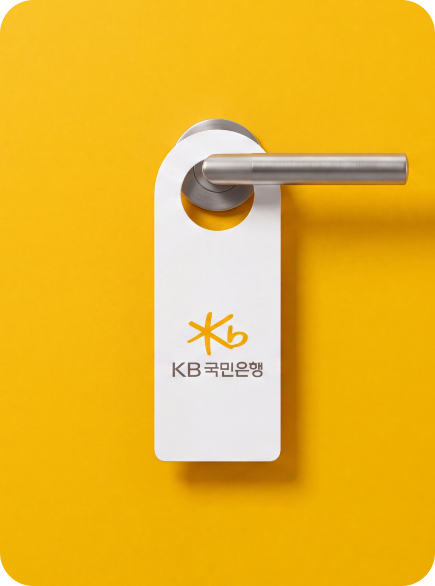
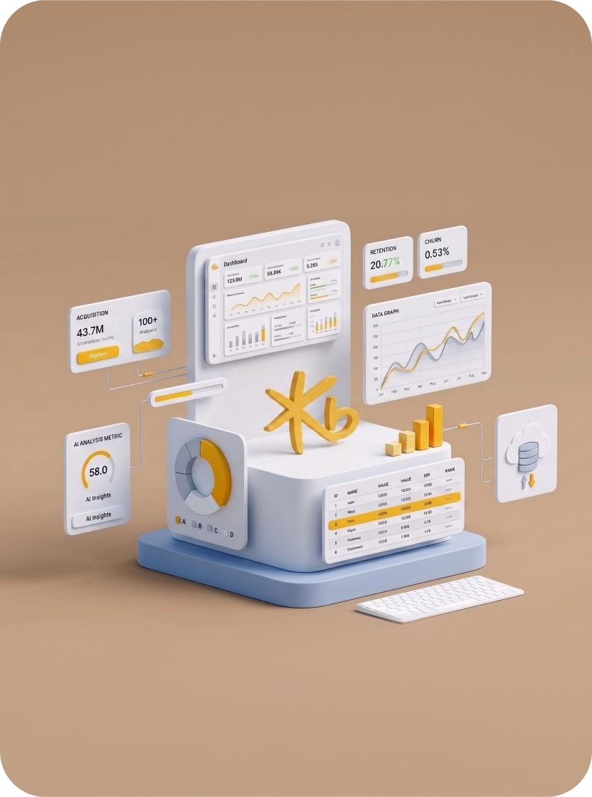
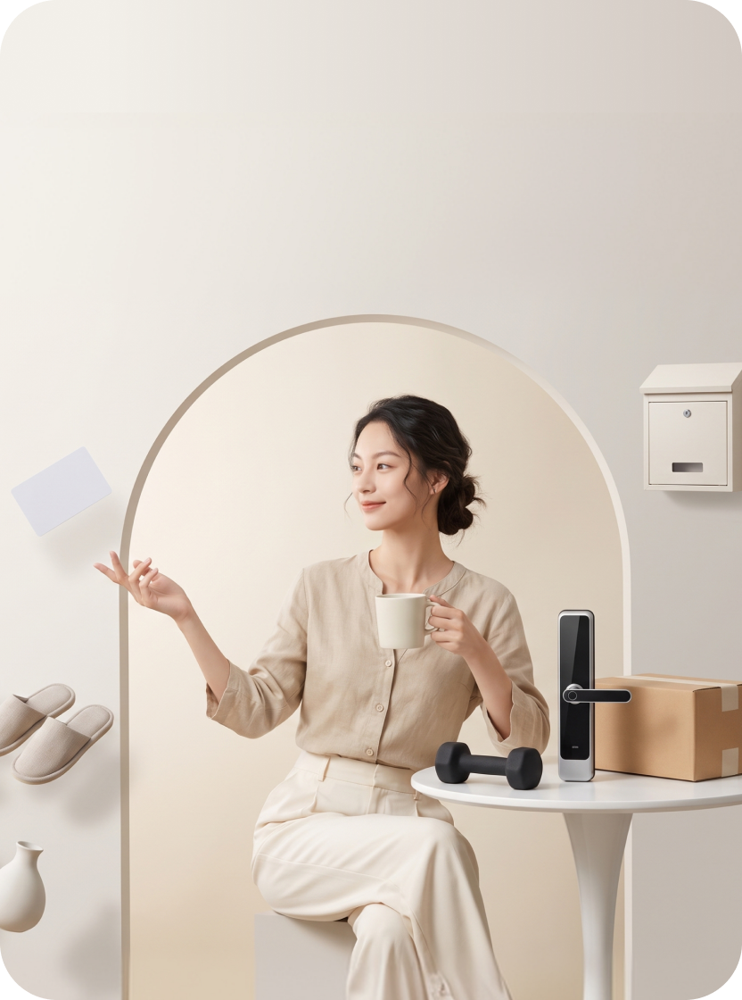

OurProjects
결과로 증명하는 것,
그것이 인스플래닛의 방식입니다.
눈에 보이는 화면을 넘어 비즈니스의 본질을 꿰뚫고,
정교한 전략과 기술로 고객의 문제를 실질적인 가치로
바꿔왔습니다.
All





Etc.
KB 직원용 단말화면 개선
2026.07.01~2027.07.01
Mobile
KB스타뱅킹 앱 UX 고도화
2026.05.01~2026.12.31
Consulting
차세대 여신 시스템 구축
2026.03.15~2027.09.30
Web
통합 고객 포털 리뉴얼
2026.08.01~2027.02.28
Etc.
AI 상담 챗봇 도입
2026.06.01~2027.06.01
Web
마이데이터 서비스 구축
2026.04.01~2026.11.30
Mobile
KB증권 MTS 개선
2026.09.01~2027.03.31
Web
임직원 교육 LMS 구축
2026.07.15~2027.07.15
SCROLL